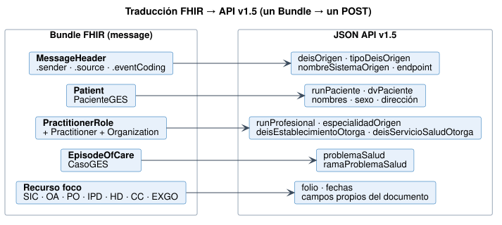

Notificación de Casos GES a SIGGES 2.0
0.4.0 - ci-build

Notificación de Casos GES a SIGGES 2.0
0.4.0 - ci-build

Notificación de Casos GES a SIGGES 2.0 - Local Development build (v0.4.0) built by the FHIR (HL7® FHIR® Standard) Build Tools. See the Directory of published versions
| Etapa 1 — Ahora | Etapa 2 — Objetivo | |
|---|---|---|
| El establecimiento envía | Bundle FHIR de esta guía | El mismo Bundle FHIR |
| Quién valida | Capa de interoperabilidad (nodo / nivel central) | SIGGES |
| Quién traduce | Canal en la capa de interoperabilidad (FHIR → JSON v1.5) | Nadie |
| Cambios en SIGGES | Ninguno | Endpoint $process-message y búsqueda de EpisodeOfCare |
Lo importante es que el establecimiento integra una sola vez. Cuando FONASA pase a FHIR nativo, se retira el traductor y ningún sistema de origen se entera.

tools/fhir2sigges.py es una especificación ejecutable del mapeo. Sirve como base para el canal de integración (Mirth, Camel u otro) y como caso de prueba.
# un mensaje
python3 tools/fhir2sigges.py fsh-generated/resources/Bundle-msg-a4-ipd.json
# todos los ejemplos → input/includes/api-v15/*.json
python3 tools/fhir2sigges.py --ejemplos
Qué resuelve:
DD/MM/AAAA y HH:MM.12345678-5 → runPaciente + dvPaciente.vfg → enfermedadRenalVfg1; cuarto-turno → cuartoTurnoEspecial.comunaEspecial, regionEspecial, fonoBeneficiarioEspecial y emailBeneficiarioEspecial.nombrePaciente (SIC), pscCasoPaci (EXGO).Resultado sobre los 15 mensajes de ejemplo: 0 campos obligatorios faltantes en los 7 endpoints.
El canal convierte la respuesta HTTP de SIGGES en un BundleRespuestaGES:
| Respuesta API v1.5 | MessageHeader.response.code | OperationOutcome |
|---|---|---|
| 2xx con N° de caso | ok |
— (o information) |
| 2xx "ya registrado" | ok |
warning / duplicate |
| 4xx validación | fatal-error |
error con expression |
| 5xx / timeout | transient-error |
error / timeout |
transient-error.